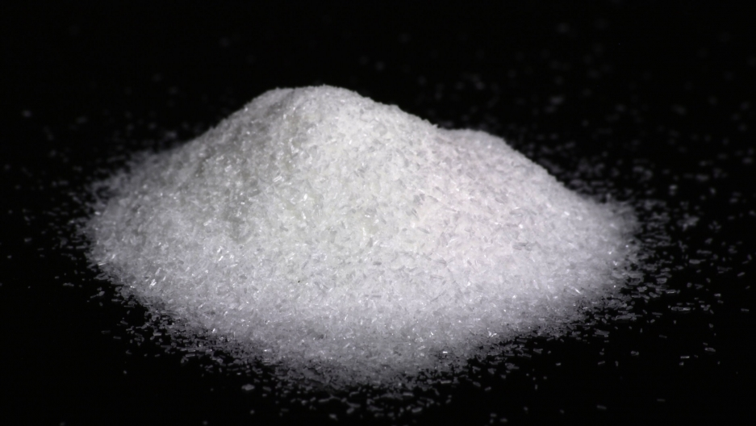
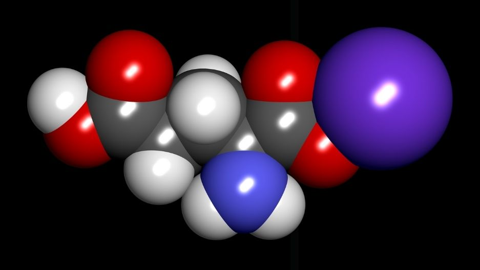
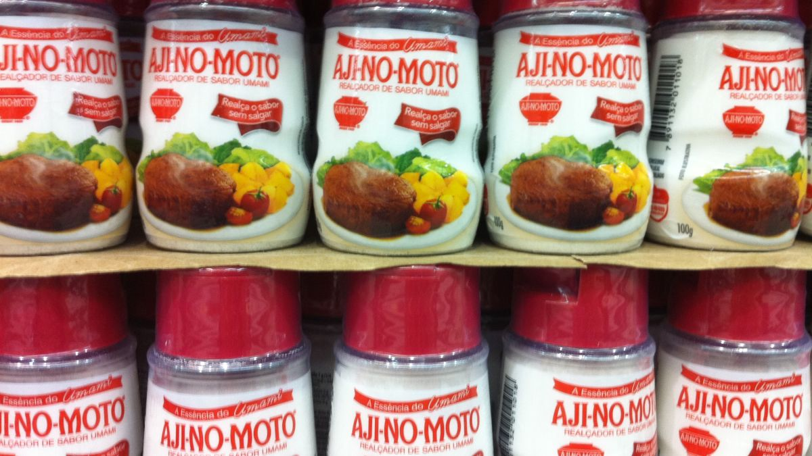

MSG is used in the food industry, particularly Chinese food (which is why it has also become known as “China salt”). MSG is alleged to cause numbness, palpitations, etc. to the consumer, most notably in a 1968 letter submitted to the New England Journal of Medicine by a Chinese-American physician, who experienced said symptoms. MSG continued to gain a vendetta, and thus the consequences for the food and restaurant industry were dire. This also resulted in the infamous “Chinese restaurant syndrome”.
WHAT?
MSG (short for monosodium glutamate) is a flavour enhancer that is used internationally in a variety of products (and under different aliases), though it is most known for being used in American Chinese restaurants. It comes in a crystalline powder form, first developed and patented by the Japanese company Ajinomoto in 1909. It has a certain stigma towards it due to the common thought that consuming it will cause negative side effects, though this has been disproven. Quoted by Dr. Nuripa Chaudhari of the University of Miami: “It tastes good at normal levels, but large amounts at high concentrations taste strange and aren't that good for you”.
WHERE? WHEN?
MSG has been commonly used since the 1950s in a variety of foods and condiments all over the world. MSG most notably has a large place in Asian foods and cooking, especially Japan. Japan is known for including MSG in a wide range of products, including Japanese mayonnaise (Kewpie being the most popular brand) and instant ramen. In America, MSG is a staple for Chinese restaurants. Due to some controversy during the 1970s regarding MSG and its safety, it was largely frowned upon for quite some time and removed from many products (and resulted in the infamous “Chinese restaurant syndrome”, though this has since been debunked). Since the 1970s, it has been coming back to American supermarkets, though under different names, such as hydrolyzed proteins, yeast extracts, etc. It also became a hit for home cooks in America after the flavour enhancer Accent was introduced in 1947. MSG is also used in Maggi sauce, an extremely popular sauce used in a wide range of foods in a wide range of countries, from countries such as India to México.
WHY?
I feel that MSG continues to be used because the stigma towards it and its controversy has died down in recent years, due to sources concluding that it is a safe product to consume in normal amounts. Though some people, including the World Health Organization, tend to disagree. Linda Bartoshuk, a director of the University of Florida's Center for Smell and Taste deems the enhancer bought harmful and useless towards affecting the flavour of the food. In a 1995 review by the FDA and FASEB, they considered glutamates a health risk for consumers. An earlier review from 1987 prepared by the WHO and FAO backed up these claims. MSG has also been linked by some groups to be the cause behind various neurological+physiological disorders.
HOW?
I feel that MSG should be only produced and consumed in very concentrated amounts as to prevent any sort of harm to anyone who uses it or consumes it. I do not feel it should be discontinued as it has mostly been proven and debunked to cause any major harm to those involved.

MSG in its crystal form

Space-filling model of MSG (C₅H₈NO₄Na)

Japanese company Ajinomoto (the world's largest producer of monosodium glutamate) patented MSG's powder form in 1909, based on Kikunae Ikeda's 1908 discovery of glutamate flavour